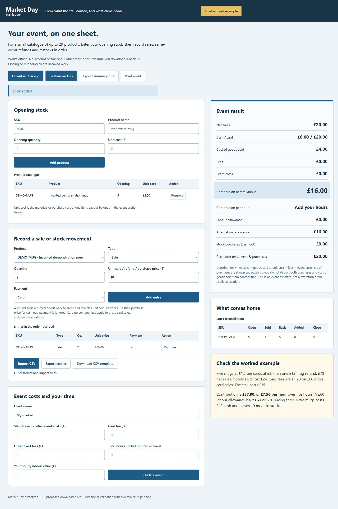

UK craft-market sellers and independent makers with up to 29 products
What did the market day leave you?
An offline event worksheet with a small product catalogue, ordered sales and stock movements, CSV import, separate stock-purchase cash out and a worked example. Save the event to a local JSON file, export CSVs or print the sheet.
No live sale.
Digital download: offline HTML tool and printable event sheet
This preview cannot take payment or place an order. The download offer still needs customer validation.

Market Day stall ledger
Reconcile one event’s stock and takings, then calculate contribution before and after a chosen labour allowance.
Read this first
- Prototype: no practitioner validation or evidence of willingness to pay yet
- No automatic saving; closing or reloading clears unsaved entries
- One event with up to 29 products; no full accounts, tax or VAT workflow
- Refunds assume saleable goods returned from this event
Read all product limits
- Unit cost is fixed per product for the event
- Percentage card fees apply to gross card sales and may differ from provider refund rules
- Cash-flow output does not reconcile a float or bank settlement
What’s included
- Downloadable tool that runs in your browser
- 29-product catalogue and 10,000-entry event ledger
- Cash and card sales, same-event refunds and restocks
- CSV template, checked import and summary/entry exports
- JSON download and restore
- Printable event report
- Worked example
A look at the product.
This public page shows a limited fictional sample. Full tools, puzzle answers and downloadable packs are kept in the private local preview.
Reconcile one event’s stock and takings, then calculate contribution before and after a chosen labour allowance.
The sample is read-only. A native Shopify product and checkout have not been connected.
Before you decide.
Does it need internet or a subscription?
No. Extract the folder and open tool.html in a current browser. The proposed £12 price is a one-time download price, still awaiting validation.
Is my event saved automatically?
No. Download a JSON backup before closing or refreshing the page. Restore that file to continue.
Can I import sales?
Yes. Create the catalogue first, then use the supplied five-column CSV format. Failed imports preserve current entries; valid imports await Apply import.
Is contribution my business profit?
It is an event estimate using the costs you enter. It excludes wider overheads, tax and VAT. A separate labour allowance shows the result after your chosen hourly value.
Has it been used by makers?
Not yet. Tests check the calculations and input handling. Validation with two real makers is pending.
Can I buy this here?
This is a storefront prototype with a local cart and checkout simulation. It does not accept payments, collect your address or place an order. A native Shopify product and checkout still need to be connected.
What does the proposed price mean?
It is a price to test with potential customers. Demand, support costs and any physical production costs have not yet been validated.